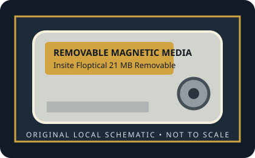

[ REMOVABLE MEDIA // MODEL-SPECIFIC RECORD ]
Insite Floptical 21 MB Removable Disk
Insite Peripherals Floptical magnetic/optical-servo format, introduced in 1991; 3.5-inch disk form factor. 21 MB nominal removable magnetic capacity. Optical servo tracks guide the magnetic head; data is recorded magnetically.

IDENTIFICATION: Verify the exact capacity, physical format, and generation printed on the medium. A cartridge has no host interface of its own; drive interface and system support must be checked against the exact reader model.
Format, capacity and compatibility
| Product / media model | Insite Floptical 21 MB Removable Disk |
|---|---|
| Generation / format | Insite Peripherals Floptical magnetic/optical-servo format, introduced in 1991; 3.5-inch disk form factor. |
| Capacity and medium | 21 MB nominal removable magnetic capacity. Optical servo tracks guide the magnetic head; data is recorded magnetically. |
| Media and drive interface | No electrical interface on the disk. Drive models determine host connection; verify the exact Floptical unit’s SCSI/other host interface and driver support. |
| Compatibility | A Floptical cartridge requires a compatible Floptical drive and cannot be read by a conventional 3.5-inch floppy drive. Floptical drives could also support ordinary 720 KB and 1.44 MB diskettes using separate heads. Host interface varies by drive model; the medium itself carries no host connector. |
| Version and model caveat | This is not the same format as LS-120 SuperDisk or Sony HiFD: those later high-capacity formats are not Floptical-compatible despite a similar 3.5-inch outline. |
Handling and preservation
Keep the cartridge in its protective case, away from dust, moisture, heat, strong magnetic fields, and physical shock. Do not open a sealed cartridge or force it into a drive. For preservation, image read-only with a known-compatible mechanism, retain the source media, record the drive/interface used, and verify copied data with checksums.
- Photograph the label and shell before use; preserve packaging, write-protect state, and acquisition notes.
- Keep at least two independent verified copies of important data. A legacy removable cartridge by itself is not an archival strategy.
Model and generation notes
This is not the same format as LS-120 SuperDisk or Sony HiFD: those later high-capacity formats are not Floptical-compatible despite a similar 3.5-inch outline.
Storage capacity names and drive interface names describe different things: confirm the cartridge format/generation first, then check the exact reader model, host connector, controller, operating-system driver, and filesystem separately.
Sources and standards
- Museum of Obsolete Media — FlopticalDocuments the 1991 Insite format, 21 MB capacity, magnetic recording, optical servo tracks, and ordinary-floppy support in compatible drives.
- FileFormat.info — Floptical diskIndependent technical overview of the Floptical storage format.
- Internet Archive — Insite Floptical documentation searchSearches period manuals for drive-specific media support and host-interface details.
Discontinued-media specifications are cross-checked against period product material and museum/archive documentation. Family-level history does not replace the exact drive manual for interchangeability.